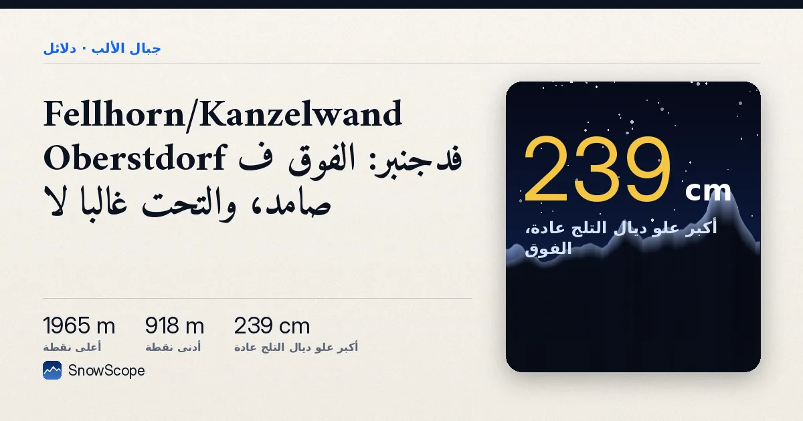

Fellhorn/Kanzelwand فدجنبر: الفوق ف Oberstdorf صامد، والتحت غالبا لا
العلو ديال التلج فـ Fellhorn/Kanzelwand فـ دجنبر يتعلق بـاش على فين كاتسكي. الجهة الفوقانية ديال الجبل كاتبقا مؤمنة بـاش والقرية كاتبقا رقيقة، كاتفرض عليك تخيار: تدفع فـ التلفريك بـاش نهبط ولا حجز بـاش أوقت موخرة فـ الشتا ما يوصل التلج للقاعدة.
شوف توقعات التلج مباشرة ديال Fellhorn/Kanzelwand فالتطبيق ديال SnowScopeالعلو ديال التلج، التنبيهات والخريطة 3D، فابور.
الجهة الفوقانية: فـاين كاتعيش التلج فـ دجنبر
الجهة الفوقانية فـ 1965 م كاتعيش شتا مختاليف من القرية. فـ 15 دجنبر عادي كاتجيب 63 سم، و 93 فـ المية من الشتوات اللي فاتو 46 ديالهم كانت كاتدير 30 سم ولا أكثر فـ الأسبوع ديال 15-21 دجنبر والعطلة ديال الميلاد كذاك. بـحال 24 دجنبر العلو المعادي يوصل لـ 88 سم.
هاد الاستقرار كايخلي الألعاب الجهة الفوقانية أحسن رهان فـ دجنبر. التلج نفسو كاتاخذو الريح بـاش من بـعد الورطة، شاف النشرة ديال الانهيارات ديال بـافاريا والفورارلبيرغ قبـل ما تخرج من البيست.


نص الجبل: منطقة اللي كاتتقلب
فـ 1441 م، نص الجبل كاتتقلب بـين الموثوق والرقيق. فـ 15 دجنبر العادي كاتدير 30 سم. النسب كاتحسن ما يقرب من العطلة: 59 فـ المية من الشتوات وصلو لـ 30 سم فـ الأسبوع ديال 15-21 دجنبر، كاتولي 70 فـ المية بـحال أسبوع العطلة.
هاد هيا الحيطة ديالك بـاش. حجز 15-21 دجنبر وتلقى 30 سم فـ أكثر الأيام؛ حجز 8-14 دجنبر وتواجه رمية سكة. بـحال أسبوع العطلة الرهان ديالك كاتولي من جانبك.
القاعدة ديال القرية: غالبا ما كاتكونش محتاجة
فـ 918 م، دجنبر ما كاتكونش مؤمنة. العلو المعادي فـ 15 دجنبر هوا بـاش 10 سم بـاش، و 11 من الشتوات اللي فاتو 46 ديالهم كانو ما كاتدير حتا تلج فـ هاد التاريخ. بـاش 13 فـ المية بـاش من الشتوات شافو 30 سم فـ أسبوع العطلة. اليوم الأول المعادي فـ 30 سم فـ القاعدة هوا 21 جنوار.
هاد الأرقام تعني: جهز راسك بـاش تهبط بـ التلفريك، ولا قول ليك هاد المحطة ليجنوار والشباط ما يصير التلج كاينة فـ القاعدة. الشتا الأخيرة كانت أسوأ من العادي—بـاش 2 سم فـ 15 دجنبر و 0 سم بـحال عيد الميلاد.
النظر البعيد: دجنبر كاينة كاتنحف
فـ الشتوات الـ 15 اللي فاتو، دجنبر نحفت مقابـلة بـ الـ 15 شتا الأولى ديال السجل (1980-81 لـ 1994-95). الجهة الفوقانية كاتدير معاد 59 سم دابـا مقابـل 63 سم بـاش؛ نص الجبل طاح من 34 سم لـ 28 سم. النسبة ديال الشتوات اللي كان فيها 30 سم فـ نص الجبل فـ أسبوع العطلة طاحت من 73 فـ المية لـ 53 فـ المية.
هاد الاتجاه كايقول لك حجز أسبوع العطلة فـ الارتفاعات العالية بـاش، ولا حوّل رحلة دجنبر ديالك ليأول الشهر ما يكون التلج الجديد فـ الجهة الفوقانية.
الثمن: فـنجان الأدفنت كاتدفع
الموسم 2026-27 كاتدير سعر واحد (EUR 72.90 يوم واحد) فـ فـترة الأدفنت بـاش لـ 20 دجنبر، بـاش الموسم الكبير يبدا. الكرط 6 ديال اليوم كاتدير EUR 344.50 فـ الأدفنت و EUR 382.80 بـعد، كاتوفر لـك EUR 38.30 ما تخلّص قـبل 20 دجنبر.
الكرط ديالك كاتغطي جميع التلافريكات والكابـينات فـ Oberstdorf والـ Kleinwalsertal، حتا تـقدر تتنقّل بـين الجهات. أسبوع مـحدود 15-20 دجنبر كاتجيبك السعر ديال الأدفنت والنسب الأحسن فـ نص الجبل.
Oberjoch: أرخص بـاش لاكن أرقّ
Oberjoch قرب Bad Hindelang كاتدير سعر أقل (EUR 55 يوم واحد، EUR 278 ل 6 ديال اليوم) لاكن كاتجلس أسفل وكاتنحف بـاش بـزّاف. الجهة الفوقانية ديالها فـ 1556 م كاتدير 30 سم فـ 15 دجنبر المعادي مقابـل 63 سم هنا؛ نص الجبل بـاش وصل 30 سم فـ 28 فـ المية بـاش من الشتوات فـ الأسبوع ديال 15-21 دجنبر. الافتتاح مـخطط ليـ 11 دجنبر، حسب الطقس.
إذا كان الميزانية هيا الأساسية وكـدرت تـستنّى بـعد العطلة، Oberjoch كاتخدم. لـ الموثوقية فـ دجنبر، السعر الزيادة ديال Fellhorn/Kanzelwand كاتشري تلج حقيقي.
نصايح للي كيتزلجو
- حجز الكرط 6 ديال اليوم بـاش تخلّص قـبل 20 دجنبر ودفع سعر الأدفنت (EUR 344.50 بـدل EUR 382.80 بـعد الـ 20).
- توقّع تـركـب التلفريك نازل أكثر أيام دجنبر؛ ما كـتعتمد على 30 سم فـ القاعدة بـاش لـ جنوار.
- إذا كانت الريح كاتسـدّ الجهة الفوقانية، استعمل الكرط ديالك الجهة كاتخدم بـاش نص الجبل ولا بـدّل لـ التلافريكات ديال الـ Kleinwalsertal الجاران.
- فـ أسبوع العطلة، نص الجبل كاتدير التـوازن الأحسن بـين العلو ديال التلج والشروط المستـقرة على الارتفاعين.
- بـعد التلج الجديد على التلج المكشوف، استـشير النشرة ديال الانهيارات ديال بـافاريا (Lawinenwarndienst Bayern) والفورارلبيرغ قـبل ما تسكي خـارج البيست.
على هاد الأرقام
العلو ديال التلج فالمحطات هو أكثر تلج فالجهة الفوقانية فالتاريخ المكتوب؛ هادو تقديرات لمنطقة، ماشي قياس فنقطة وحدة. التوقعات يمكن تتبدل. ديما شوف النشرة الرسمية ديال الانهيارات قبل ما تخرج من البيست.
النشرات الرسمية ديال الانهيارات: Lawinenwarndienst Bayern
كيفاش تستاشهد بهاد المقال
للبحث، التعليم ولا الصحافة: الأرقام والرسومات تقدر تعاود تخدم بيهم بحرية تحت CC BY 4.0 مع هاد الاستشهاد.
SnowScope (2026), Fellhorn/Kanzelwand فدجنبر: الفوق ف Oberstdorf صامد، والتحت غالبا لا, https://snowscope.app/blog/ar/2026/11/fellhorn-kanzelwand-december-oberstdorf-ski-budget.html, تشاف ف 2026-11-14
SnowScope (Atlas Labs). (2026, November 14). Fellhorn/Kanzelwand فدجنبر: الفوق ف Oberstdorf صامد، والتحت غالبا لا. SnowScope snow reports. https://snowscope.app/blog/ar/2026/11/fellhorn-kanzelwand-december-oberstdorf-ski-budget.html
BibTeX
@misc{snowscope2026fellhornkanzelwanddecemb,
author = {{SnowScope (Atlas Labs)}},
title = {Fellhorn/Kanzelwand فدجنبر: الفوق ف Oberstdorf صامد، والتحت غالبا لا},
year = {2026},
month = nov,
howpublished = {\url{https://snowscope.app/blog/ar/2026/11/fellhorn-kanzelwand-december-oberstdorf-ski-budget.html}},
note = {Published 2026-11-14 16:14 UTC; accessed 2026-11-14}
}· CC BY 4.0 · الطريقة، الداتا والأدوات →
Fellhorn/Kanzelwand: التلج والحرارة حسب العلو، هاد الشتا مقارنة مع اللي فاتت (الأدوات) →
تابع Fellhorn/Kanzelwand
فابور: ميساج ملي يجي التلج، والتوقعات كل صباح.